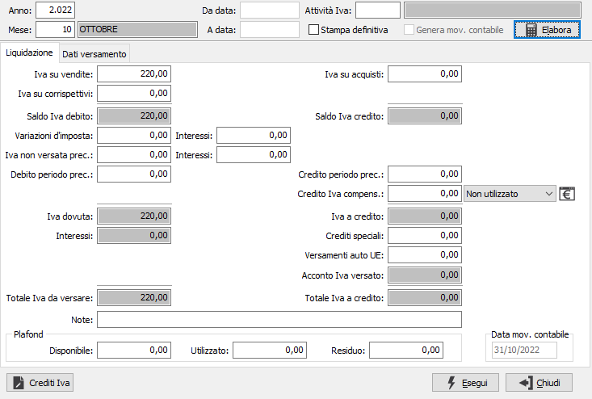
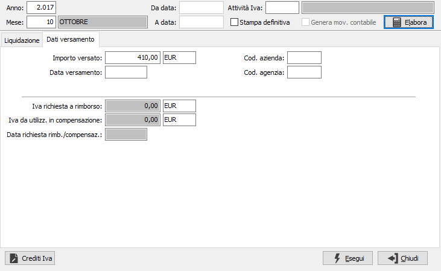

Stampa liquidazione Iva
Il programma effettua il calcolo e la stampa, di prova o definitiva, della liquidazione periodica Iva. L’elaborazione di prova può essere effettuata più volte, e ciascuna volta viene effettuato il ricalcolo sulla base delle fatture e dei corrispettivi presenti al momento dell’elaborazione.
Il calcolo delle liquidazioni Iva non richiede la stampa definitiva dei registri Iva. È quindi del tutto ininfluente, per la determinazione dell’Iva a credito o a debito, la stampa in definitiva degli stessi.
Si ricordi che in caso di gestione dei corrispettivi ventilabili, è necessaria la previa stampa definitiva della ventilazione per l’esatto calcolo delle liquidazioni periodiche.
Accedendo al programma, appare la seguente maschera video:

ANNO: Inserire l'anno fiscale di riferimento.
MESE: Inserire il numero del mese di riferimento. I contribuenti trimestrali possono inserire i mesi 3, 6, 9 e 12 per indicare rispettivamente il 1°, il 2°, il 3° e il 4° trimestre.
ATTIVITÀ IVA: se l’utente gestisce più attività Iva, indichi in questo campo l’attività per la quale è richiesta l’elaborazione della liquidazione Iva. Sul campo è attiva la ricerca (F9) sulla Tabella Attività Iva
STAMPA DEFINITIVA check box per definire il tipo di stampa che si vuole effettuare. Valori possibili:
vuoto = stampa di prova;
spunta = stampa definitiva.
Il pulsante accanto al Credito periodo precedente, se attivo, mostra il credito iniziale e l'eventuale credito residuo.
Per il mese di Dicembre o l'ultimo trimestre di liquidazione è possibile inserire i parametri da data, a data per effettuare il calcolo per un numero inferiore di giorni.
Inseriti i parametri indicati, occorre premere il bottone Elabora per avviare l’elaborazione. Su due linguette consecutive vengono visualizzati tutti i valori, ed i vari campi sono accessibili per eventuali variazioni (assolutamente sconsigliabili) da parte dell’utente.
Per procedere alla stampa, occorre premere il bottone Esegui.
Ovviamente la stampa definitiva aggiorna le tabelle, mentre la stampa di prova non effettua alcun aggiornamento.
Come già detto, un intervento manuale in questa fase è altamente sconsigliabile: i programmi di servizio che effettuano, in caso di necessità, il ricalcolo delle liquidazioni attingono infatti i dati dai vari registri Iva, ed un’eventuale modifica manuale della liquidazione non verrebbe ricalcolata.
È quindi preferibile procedere effettuando normali correzioni tramite il programma di Gestione Prima Nota provvedendo poi a rielaborare la liquidazione periodica.

Nel caso in cui venisse eseguita per errore una stampa definitiva, tramite i programmi di servizio è possibile ripristinare la situazione preesistente. In tale evenienza, contattare il Servizio di Assistenza Software.